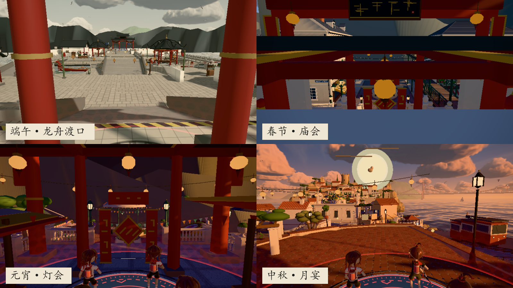

《鼓令 · DRUM TIDE》官方四时特辑
衣承
四时
Wear the rhythm.
从端阳竞渡到元宵灯会，把四座节令灯台化作四种衣冠轮廓。 这是属于《鼓令》的时尚图鉴，也是下一局开鼓前的入场仪式。
- 04
- 节令灯台
- 4v4
- 彩墨对局
- 180
- 秒定胜负

端阳 · 龙舟竞渡
中秋 · 月宴望圆
元宵 · 灯火游园
春节 · 庙会击鼓
端阳 · 龙舟竞渡
中秋 · 月宴望圆
元宵 · 灯火游园
春节 · 庙会击鼓
四时入衣 / FOUR SEASONS IN FORM
节令不是背景。
它决定衣摆如何落下。
四时衣冠沿用游戏里的水墨、灯笼、月白与朱砂， 将四张地图的色温、建筑和节日物件转译成四种当代表情。

The seasonal wardrobe
四时衣冠
每一套造型对应一张节令地图。颜色取自灯台、天空与彩墨， 廓形则回应角色在场上奔跑、回身与击鼓的动作。
01 / 04

From the game world
四时流转，
衣冠随之。
“灯台在场上轮转，季节也在身上流转。”
Four festival maps
四时灯阵
端阳的桥、中秋的月、元宵的灯、春节的庙会， 在游戏里是四座灯台，也是这套衣冠的四种视觉底稿。


01
端阳 · 龙舟渡口
墨浪、拱桥与龙首舟
02
中秋 · 月宴
月白、桂影与圆月门
03
元宵 · 灯会
主灯、夜游与水面反光
04
春节 · 庙会
朱砂、春联与人群

Enter the lantern array
衣服穿在身上，
灯阵赢在场上。
4 名墨灵对阵 4 名墨灵。用彩墨覆盖灯台，占住四时主灯， 在 180 秒内积累更高的文化浓度。每次鼓点落下，灯台上的颜色都会改写场上秩序。
- 持灯
- 1 / 2 / 3 / 4 座灯台决定文化浓度增速
- 主灯
- 每 30 秒指定一座主灯，占灯与产出翻倍
- 决胜
- 击鼓、夺灯、布彩，180 秒一局定胜负